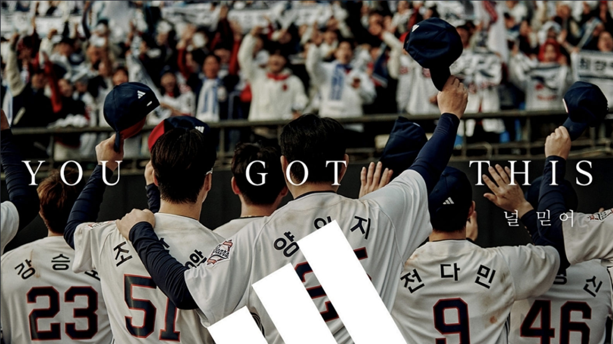
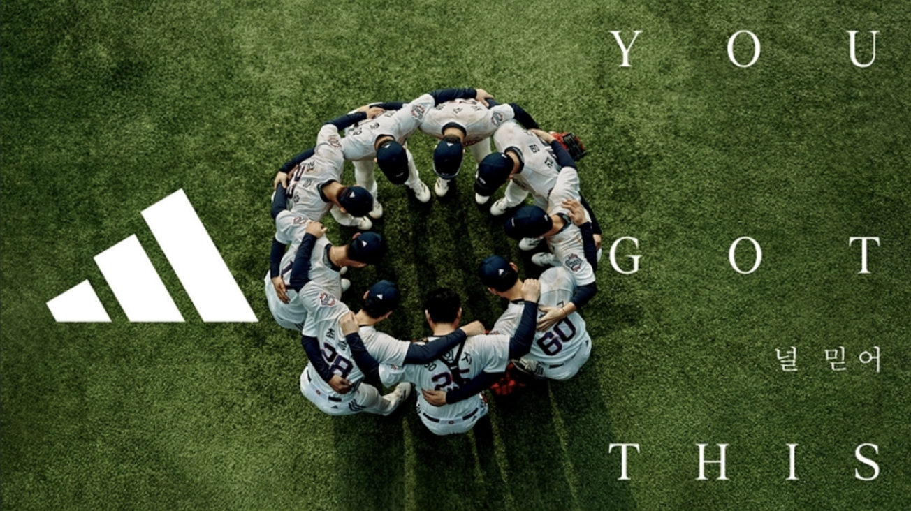
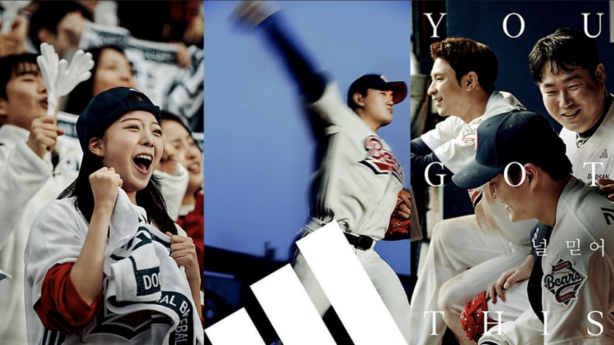

널 믿어(You Got This)’ 캠페인은 가장 가까운 존재가 보내는 응원과 지지를 통해 어려운 순간에도 혼자가 아님을 믿고 긍정적으로 나아가자는 메시지를 전달한다. 두산베어스와 함께한 이번 캠페인에서는 선수들과 ‘최강 10번 타자’인 두산베어스 팬들의 강력한 유대감을 생동감 넘치는 비주얼로 표현했다

아디다스는 두산베어스와 함께한 ‘널 믿어(You Got This)’ 캠페인을 통해 선수와 팬이 하나로 연결되는 특별한 경험을 선사하고자 했다면서 스포츠의 진정한 가치는 단순한 승패가 아니라 서로를 믿고 함께 나아가는 데 있으며, 앞으로도 다양한 파트너십 활동을 통해 긍정적인 서포터의 가치를 전달할 것이라고 밝혔다..

이번 캠페인은 선수들에게 가장 가까운 존재인 팬이 보내는 응원과 지지를 통해 어려운 순간에도 혼자가 아님을 믿고 긍정적으로 나아가자는 메시지를 담았다. 팬들이 두산베어스의 응원가를 목청껏 부르며 선수와 팬이 하나로 연결되는 특별한 경험을 연출했다.선수들에게 가장 큰 서포터인 팬들의 지지와 응원으로 경기 전 압박감을 이겨내는 선수들의 모습을 통해 ‘긍정적인 서포터의 중요성’을 강조한다.
또한 그라운드 안에서는 감동을 전하고, 밖에서는 낮은 자세로 팬들에게 다가서는 두산베어스의 ‘팬 퍼스트’ 정신도 나타내고 있다
2001년 - 'miracle'의 시작
정규시즌 3위로 포스트시즌에 진출한 두산은 준플레이오프와 플레이오프를 거쳐 한국시리즈 우승을 차지했다.
당시 두산은 마운드 전력이 약화된 상태에서도 우승을 일궈내며 "미라클 두산"이라는 별칭을 얻었다..
2015년
정규시즌 3위로 포스트시즌에 진출한 두산은 넥센 히어로즈, NC 다이노스, 삼성 라이온즈를 차례로 꺾고 한국시리즈 우승을 차지했다.
특히 한국시리즈 5차전에서 삼성 라이온즈를 13-2로 대파하며 14년 만에 정상에 올랐다..
2017년
2017년 두산 베어스는 시즌 중반까지 5위권에 머물렀으나, 후반기에 대역전극을 펼치며 정규시즌 2위로 마감했다. 이러한 극적인 반전은 "미라클 두산"이라는 별칭을 더욱 공고히 하는 계기가 되었다.
2019년
2019년 10월 1일: 정규시즌 마지막 경기에서 두산은 NC 다이노스를 상대로 6-5로 승리하며 SK 와이번스와 동률을 이루었다. 그 이후
상대 전적에서 앞선 두산은 정규시즌 1위를 확정지었다.
2021년
정규시즌 4위로 포스트시즌에 진출한 두산은 와일드카드 결정전부터 플레이오프까지 모두 승리하며 한국시리즈에 진출했다.
이는 KBO 리그 최초로 와일드카드 팀이 한국시리즈에 진출한 사례로 기록되었다.
2025년
아디다스는 "스포츠를 통해 세상을 바꿀 수 있다는 믿음"이라는 철학을 갖고 있다. 이러한 그들의 철학이 두산 베어스의 '미라클', '허슬'과 만나 시너지 효과를 내주길 기대하고 있다
hustle
miracle과 함께 두산을 나타내는 단어이다. 2007년 당시 선수들은 빠른 발을 이용한 도루로 상대 팀을 압박하며 경기를 펼쳤고, 팬들은 이러한 선수들의 열정을 응원하기 위해 '허슬두'를 외쳤다. 이 구호는 두산 베어스의 정신을 상징하는 중요한 단어로 자리 잡았다.